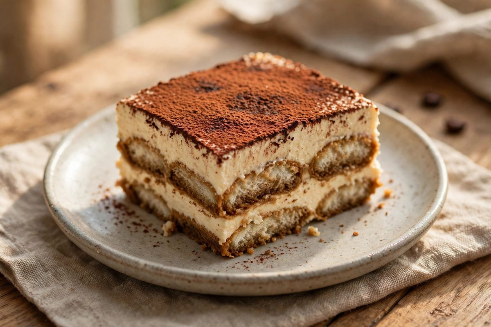

Home › Guides
Tiramisu: Italy's Most Loved Dessert

Tiramisu is Italy's most famous dessert, and it is also one of the most argued about. Every family has its version, and every cook has an opinion about the eggs, the cream, and the coffee. The classic version is simple: savoiardi biscuits dipped in coffee, layered with a mascarpone cream, and dusted with cocoa. It needs no baking, and it tastes better the next day.
The ingredients
You need savoiardi biscuits, also called ladyfingers, mascarpone, eggs, sugar, strong coffee, and cocoa powder. Use good mascarpone, because it is the heart of the dessert. Use strong espresso or very strong filter coffee, cooled to room temperature, and add a spoonful of coffee liqueur if you like.
The biscuits must be crisp savoiardi, not soft sponge fingers, because they need to hold their shape after a quick dip. The eggs should be very fresh, because they are not cooked. If you are serving children, pregnant guests, or older people, use pasteurised eggs or a version made with whipped cream instead.
The mascarpone cream
Whisk the egg yolks with sugar until pale and thick, then fold in the mascarpone until smooth. In a separate bowl, whisk the egg whites to soft peaks, then fold them gently into the mascarpone mixture. The cream should be light, smooth, and able to hold its shape.
Fold gently and do not overmix, because the air in the egg whites is what makes the cream light. If the mixture looks grainy, the mascarpone was too cold; let it come to room temperature before you start.
Layering
Dip each savoiardo briefly in the coffee, one second on each side, and lay it in a dish. Do not soak the biscuits, or the dessert will be soggy and will not slice. The biscuits should be damp, not wet, and they will soften further as the dessert chills.
Spread half the cream over the biscuits, then add a second layer of dipped biscuits and the remaining cream. Smooth the top, cover, and chill for at least four hours, and overnight if you can. The flavours settle and the dessert firms up, so it slices cleanly.
Serving
Dust the top generously with cocoa powder just before serving, because cocoa absorbs moisture and goes dark if dusted too early. Use a fine sieve and unsweetened cocoa, not drinking chocolate, which is too sweet.
Serve tiramisu cold, in slices, with nothing else. It is rich enough on its own. Cut with a hot, dry knife for clean slices, and wipe the knife between cuts.
Tiramisu variations
Once you have the classic tiramisu, try the variations. A strawberry tiramisu replaces coffee with a strawberry puree, and it is lighter and fruitier. A lemon tiramisu uses lemon curd and is bright and fresh. A pistachio tiramisu uses pistachio cream and is rich and nutty.
You can also make individual tiramisu in glasses, which are easier to serve and look elegant. Layer the biscuits and cream in small glasses, chill them, and dust with cocoa just before serving. Whatever the variation, keep the method the same: dip briefly, layer, chill, and dust at the end.
Frequently Asked Questions
How long does tiramisu need to chill?
At least 4 hours, and overnight is better. The biscuits soften and the dessert firms up so it slices cleanly.
Can I make tiramisu without raw eggs?
Yes. Use whipped cream instead of egg whites, or use pasteurised eggs. The texture will be slightly different but still good.
Why is my tiramisu soggy?
The biscuits were soaked too long. Dip each one for about one second per side; they should be damp, not wet.